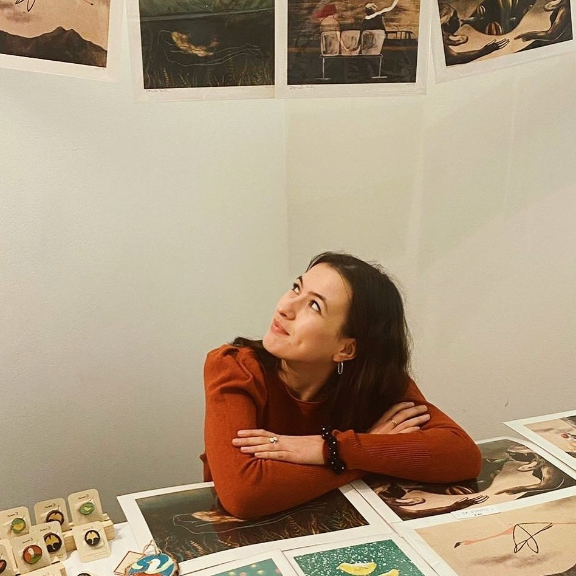

<div style="overflow: auto;">
    
  <div class="align-center flex-column mt2">
    <div class="flex w60">
      <div class="w30" id="container-portrait">
        <div id="square">
          
        </div>
      </div>
      <div class="w70 pl2">
        <div class="w80">
          <p>Emanuela Sandu è un’illustratrice classe 1998.
          Nasce a marzo, in una piccola cittadina della Romania. Da piccola si trasferisce a Roma, città dove
          vive e lavora.</p>
          <p>Nel 2020 consegue la laurea triennale in Grafica d’Arte presso l’Accademia di Belle Arti di Roma,
          avvicinandosi così alle tecniche incisorie tradizionali. Studia a Valencia presso l’Universitat
          Politècnica, dove frequenta corsi di grafica ed illustrazione. Tornata a Roma, si specializza in
          Illustrazione ed Editoria d’Arte. Frequenta corsi di perfezionamento presso la Scuola
          Internazionale d’Illustrazione Fondazione Stepan Zavrel e partecipa con l’opera Ritorno alla 39°
          edizione della Mostra Internazionale d‘Illustrazione per l’Infanzia.
          Collabora come illustratrice con enti privati, magazine, aziende ed editori.</p>
          <p>Nel 2019 realizza grafiche ed illustrazioni in occasione della Decade of Family Farming per FAO Nazioni Unite.</p>
          <p>Nel 2022 collabora con Miramare, OGS e WWF per illustrare i principi dell’Ocean Literacy e nel
          2023 illustra il calendario aziendale di Gruppo Buffetti.
          Il suo libro d’artista Tevere vince il primo premio Enzo Lionello Natilli in occasione della XX-II
          rassegna 100% Pasolini organizzata dalla Scuola di Arti e Mestieri di Suzzara.
          E’ attiva anche nell’ambito della street art. Ha partecipato infatti a progetti di riqualificazione
          urbana in città come Piacenza, Grosseto e Bologna.</p>
        </div>
      </div>
    </div>

    <!-- PREMI -->
    <div class="w60 parag" style="margin-top: 4rem;">
      <h2>Premi</h2>
      <ul>
        <li>
          <b>2022</b> Primo premio Enzo Lionelli Natilli- 100% Pasolini, Scuola di Arti e Mestieri di Suzzara          
        </li>
        <li>
          <b>2022</b> Il mare si fa in 7, selezione e vittoria del concorso organizzato da OGS, Miramare e WWF
        </li>
        <li>
          <b>2022</b> Vincitrice del concorso d’illustrazione CalendArt, illustrazioni calendario 2023 per Gruppo Buffetti
        </li>
        <li>
          <b>2021</b> Vincitrice primo premio del concorso biennale d’illustrazione Bosco di fiabe
        </li>
      </ul>
    </div>

    <!-- MOSTRE E PUBBLICAZIONI -->
    <div class="w60 parag">
      <h2>Mostre e Pubblicazioni</h2>
      <ul>
        <li>
          <b>2023 </b>
          <p>Copertina <i>Andata in porto, Gioia Tauro</i> la sifda vincente edito da Rubbettino Editore</p>
        </li>
        <li>
          <b>2022</b>
          <p><i>Come un racconto</i>, VI Rassegna Internazionale Biennale- DARS, Udine.</p>
          <p><i>Impressum Est</i> presso la Biblioteca Vallicelliana di Roma.</p>
          <p><i>Colori e immagini della scienza</i> presso il Palazzo delle Esposizioni di Roma.</p>
          <p><i>Dalle carte d’ARchivio alle carte d’ARtista</i> presso l’Archivio di Stato di Roma.</p>
          <p><i>LiberaMente</i>, ImpactHub Roma.</p>
          <p><i>Lasciare un segno</i>, Palazzo Chigi, Centro per l’Incisione e la Grafica, Formello.</p>
        </li>
        <li>
          <b>2021</b>
          <p>Selezione e partecipazione alla 39° edizione della mostra Internazionale d'Illustrazione per l'Infanzia <i>Le immagini
          della Fantasia</i>, presso la Casa della Fantasia, Sarmede.</p>
          <p>Selezione e partecipazione al progetto di riqualificazione urbana <i>TRAME FESTIVAL</i>, Grosseto</p>
          <p>Selezione e partecipazione al progetto di riqualificazione urbana Cheap, Bologna Selezione e partecipazione al progetto
          di riqualificazione urbana <i>cARTElloni l'arte si fa per strada</i>, Piacenza.</p>
          <p>Selezione e partecipazione alla mostra in occasione del CinemaFest, Orvieto Selezione e partecipazione alla mostra
          digitale <i>Terraquieta</i>, organizzato da BAG, Biennale Arte Giovane.</p>
          <p><i>C'era una volta la cartolina o forse ancora c'è</i> presso l'associazione La Linea Contemporanea, Roma.</p>
        </li>
        <li>
          <b>2020</b>
          <p>Selezione e partecipazione alla mostra collettiva <i>Incontri Roma Fest</i>, Roma.</p>
        </li>
        <li>
          <b>2019</b>
          <p><i>Volar</i>, presso la R-Evolution School, Valencia.</p>
        </li>
        <li>
          <b>2018</b>
          <p>Selezione e partecipazione alla mostra fotografica <i>Borromini visto dai giovani romani</i>, presso l'Aula Colleoni, Roma.</p>
        </li>
      </ul>
    </div>
  </div>
</div>